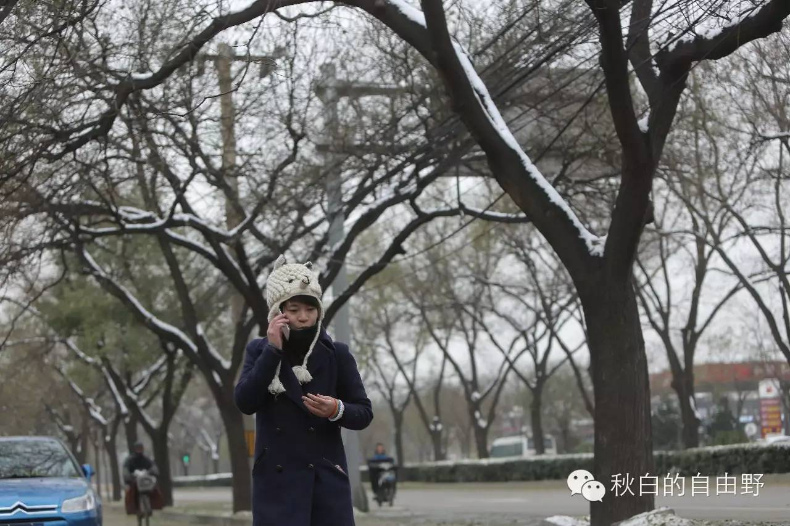
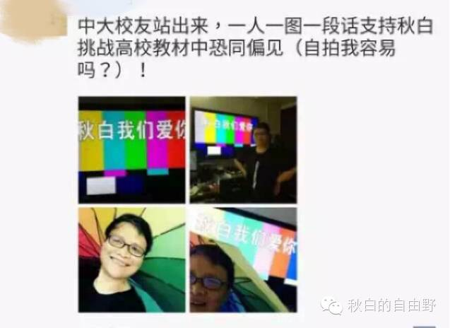
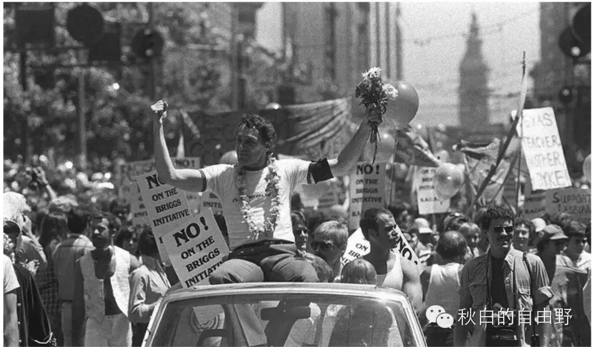
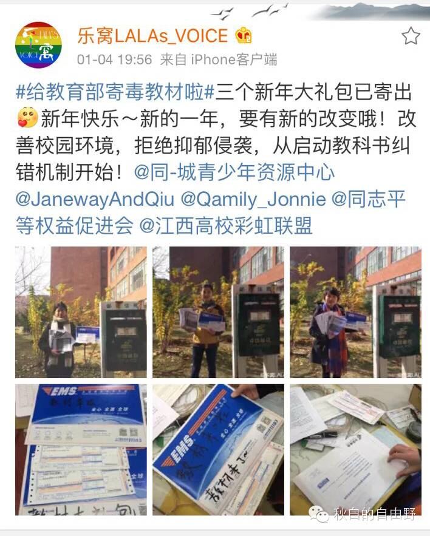

来自秋白的邀请 | 2016，我们再试试改变世界好吗？


回想起两年前，我还是那个在图书馆看到教材说同性恋是精神疾病后胆战心惊的少女（捂脸…）。然而不知是什么力量，推着我向前走了那么远，已超出自己曾经对于生活的想象。2015年，我第一次鼓起勇气走向街头举牌来表达自己的态度，第一次走向教育厅的信访办公室递交举报信，第一次走进法院的立案大厅排队等候并在法院门口扬彩虹旗；也第一次并成为了第一个与教育部官员们坐在法庭上谈同性恋问题的同志……这一切就那么确确实实发生在我的生活中，真实而激动人心。
是什么让我踏出那一步，又成为现在的自己？可能有对错误及污名的气愤，有对自己没有“错”和“病”的坚信，有骨子里性格的反叛，有对不公和霸权的愤怒。
2014年中，我在同城青少年资源中心（GLCAC）参与调查错误教科书负面影响调查。一位被访谈的某高校医学生告诉我他从小就知道自己是同性恋，却至今仍然希望科技可以发展到改变他的性取向，让他变得和绝大多人那样“正常”。同年，他在学校的医学教材上看到同性恋被描述为变态和艾滋病的高危人群，这加重了他的抑郁症。他甚至不敢和自己的抑郁症医生提到他是同性恋的事实。那是怎样的一种恐惧，我无法感受到。只是通过他身边的朋友多次辗转联系，他才愿意接受电话访谈，我强烈感受到那份压抑。过去的两年，当我站出来之后，越来越多的朋友向我倾诉他们在校园里被欺凌、老师在课堂上发表“恐同”言论的经历。我越来越明白，我们所做的远比我们应该做的少。将愤怒、叛逆转化为爱和非暴力的行动去推动改变，这也许才是出路。
正是如此，2014年的教科书污名化调查结束后，我仍继续参与这方面的工作。这一路上一点也不轻松。我纠结过，迟疑过。在担心对父母的伤害和“一定要做”的迟疑间，最终我还是迈出起诉教育部的那一步。该来的终要来。而这也是我开始为人所知的开端。死磕“教科书同性恋去污名化”，这当初简单而执着的想法，想着想着就成真了，做着做着就坚持下来了。

(秋白在北京街头，奔波于法院之间。摄影/紫阳 新京报记者）
当然，紧随而来的是，第一次被校方约谈，第一次被“威胁”，第一次遇到“恐同”教师的当面指责，第一次在性取向问题上直面家人，第一次看到母亲那般无力，第一次被带去医院“就诊”……
过去的一年，我便是在这样的力量与冲突下前行。当看到妈妈的眼泪和无力时，我也变得脆弱起来。当我看到广东高等教育出版社傲慢的回复和收到天河法院“不予立案”的通知时，不知何去何从的迷茫感和压抑涌上心头。当我收到新闻总局“不归我管”的电话回复时，半天说不出话来。与教科书狠狠死磕的这两年，好像改变了什么，又好像什么都没能改变。曾经好几次内心的压抑不断积累，常常好想找个地方躲起来，停留、歇息，或者静静地一哭为快。然而事情一茬接一茬，学习作业一轮接一轮，由不得我反应过来又要“战斗”了。
每当我感到无力时，被好基友们的行动温暖到。当我看到华中科技大学的朋友在调查图书馆错误教材并要求下架举行校内呼吁时、当广东外语外贸大学崔乐老师公开写文章“出柜撑秋白状告教育部”时，当有记者朋友给我一些很好的建议时，当我的微信公众后台收到各路好心人的关心和鼓励时，我又充满了力量和勇气。你们的这些一举一动，都在提醒我同行的人一直都在。你们知道吗，我在北京中院与教育部“庭前对话”前身边好几位朋友收到了妈妈“感谢你们一直陪着她”的短信和《朋友》这首歌。那一刻，我的心都化了。正是朋友的支持和妈妈逐渐的理解，让我看到一切都在改变。虽然有时改变来得很慢，虽然有时前进一步退三步，我总是相信一切都会变好的。过去的一年，我就是在不断“碰壁”、冲突和被温暖、鼓励的张力中前进，走到今天。我想，这是所有想参与改变，呼唤正义的行动者的共同心境吧。

（中山大学中文系教授艾晓明，拍照撑秋白）
在这里，我特别要感谢一些人。2015年我组建了一支小团队。飞飞、楠楠、小新、情书、仑仑、忽忽，她们在我“被出柜”最灰暗的时候替我分担工作，每个人平时都忙得晕天暗地还帮我管理平台、写东西、邮寄资料、做街头行动，每周从很偏远的地方赶车过来只为讨论半小时的行动进展。现在，飞飞与楠在工作、生活与参与同志公益的纠缠中逐渐掌握了方向，仑仑的毕业论文打算写写青少年同志在校园政策权益保障上的现状。前段时间，小新妹纸组建了广州大学有史以来第一个彩虹社，她很久之前说过，她的梦想是在毕业之前成立属于广大的彩虹社。感谢在行动中结识的这群亲密战友们，秋白身后其实有很多个“秋白”在付出。
既然坚持了那么久，回头看，我们改变了什么？
2014年，少有媒体关注教科书中的同性恋污名问题，到2015年关于秋白和教科书的媒体原创报道已超过了400多篇，从几十个到几万人在持续关注这一切。这难道不是改变么？
2015年，我与教育部的对话被媒体和朋友称为“中国LGBT群体与政府部门首次公开平等地对话”。就在今天，媒体刚刚报道“因教材污名同性恋起诉教育部及其类似案件”入选由中国人民大学宪政与行政法治研究中心主办的“2015中国十大宪法事例”。同性恋群体通过法律和非暴力的社会行动来维护权益被认定为宪法事件，这难道不是改变吗？
前段时间，暨大一名抑郁症学生因性取向担心无法为父母传宗接代等精神压力自杀后，又再次爆出由暨南大学心理健康中心编写，暨大出版社出版的2013年》大学生心理健康》教材，描述“同性恋是性指向障碍”。之后，好几位朋友来信告诉我他们愿意成为“当事人”公开起诉暨南大学出版社。这难道不是改变吗？
但如果我们将“改变”设定在今年教育部承诺什么，或是错误的教材一年内全部消失，这些期待无疑是要落空了。
美国同性婚姻合法化的那一刻，全世界欢欣鼓舞，我们也许在叹息中国什么时候可以实现同性婚姻合法化。可权利从来不是等来的，自1969年美国石墙暴动发生后，千千万万性少数开始站出来，为争取ta们的合法权益上街呼喊。当宗教活动领导人Anita Bryant号召全国性运动来阻止同性恋维权时ta们愤怒呐喊，当警察在街头暴打同性恋时ta们游行示威，当美国不允许同性恋加入部队时ta们举牌抗议。

（Harvey Milk，美国历史上第一位被选任政府职位的公开同性恋倾向的政治人物。他为了争取同性恋者的合法权益而选择从政，但最终被保守派刺杀。他说，假如子弹穿过我的头，也让它打破每一扇紧闭的柜门。）
美国人民用鲜血甚至付出生命的代价坚持抗争50年，才换来今天全美同性婚姻的合法化。我在教科书去污名化议题上坚持的这两年，与美国五十年同运平权历史相比只是一个小零头，我们有理由不坚持吗？今天争取的每一点进步，都在为争取同性婚姻合法化做铺垫。而且哪怕某一天我朝允许同性结婚也不意味着所有歧视与不公就能够消除，平权没有止境。
2016 如果仍有你的支持
11月底北京开庭那天，教育部其中一位官员说可以把举报信寄往“教育部统一监督举报受理中心”。随后各地的小伙伴迅速寄出举报信及毒教材，我也满怀期待地写好举报信寄出去，没想到的是，小伙伴们的信件显示已投递成功，而唯独我的信件被退回……

（秋白女友发起一人一信，寄信教育部的行动，详情请点击文末的阅读原文）
看样子，教育部也是做好打“持久战”的准备了。2016年，我已经孕育着好多好多行动的可能性，例如如何跟进教育部的举报纠错机制，游说学者发声支持、与错误教材的编者及出版社面谈、寻求更多可能性在法律途径内捍卫性少数的平等教育权，并在各地举办教科书去污名行动的分享会让更多人与我们一样变得有力量……
如今教育部还没有采取任何积极行动，说明我们凝聚的力量还远远不够！
如今还没有任何一家书店、高校、图书馆、出版社调查毒教材及下架，说明我们的发声还远远不够响亮！
2016，我们可以做的、应该做的还太多太多！
我们不是因为看到希望才坚持，却是因为我们坚持了，所以看到希望。
然而，行动可以带来改变的同时，行动也是需要成本的，如果能有你们的支持，我才会走得更远，我想邀请所有人，与我一起走下去，好吗？
关注秋白行动及教育政策议题的你们，我想了解你们的故事，我想了解你们是什么时候开始关注教科书歧视问题的，通过什么途径得知秋白起诉教育部的新闻，当时你的感受及是否采取一些行动，又或许只是当中一次小小的触动，又或许你只是单纯地想对我说一些话，又或许是你对公民行动、社会改变的看法。我想听听这些散落在世界各地的人与故事。欢迎将你们的故事发送至邮箱：827598881@qq.com。
转发或许不能马上带来改变，但代表一种态度。
转发即是一种关注，是聚在一起的力量。
2016年，如果你愿意在你所学习或生活的城市做一些事情，请邮件发至:827598881@qq.com。
1、作为当地“当事人”起诉出版错误教科书的出版社。任何人都可以，不需要是学生。
2、作为“联络人”，想尽办法找到你所在地出版错误教材的出版社、编者的联系方式，并愿意和身边的同伴一起去游说“TA”。
3、你愿意作为“协调人”在你所在的学校或公共空间，举办教科书污名同性恋的分享会。不要怀疑，你只要会讲故事就可以。
如果以上任何一点你愿意参与，请告诉我。
我会尽快与你取得联系的。
行动支出：
往返北京等外省的城际交通费（北京高铁单程862元，其余省份高铁单程500元，有时因不能耽误正常学业出现时间紧迫的情况下，会选择飞机往返，预计4个城市。平均600元/单程*2程往返*4次为4800元）；
住宿费（150元/晚*2晚*5次.尽量青旅，预计1500元）；
与老师/学者见面的餐饮费（40元/人*10人，400元）；
游说和倡导资料制作费（10/人*100份，1000元）；
各地分享会的活动场地和物资等开支（300/场*5场，1500元）
还有秋白本人的不吃土小金库也求打赏……金额若干……
费用总共至少为9200元。如果费用充足，我还可以到更多地方去开分享会，用行动影响更多人。真心不确定能众筹到多少资金，唯一确定的是教科书去污名化道路势必要勇敢地走下去，这关于性少数群体最基本的尊严与尊重，关于学生最基本的正确教育权。
你们的每一次支持对于我而言，非常重要。还记得2015年4月份我在网络上发起筹一只大白陪我上北京找出版总局的众筹信吗，短短几周转发量好几千，也很快筹集到五千元。如果当时没有筹集到五千元，我就不可能有资金有动力坚持到八月份成功状告教育部，更不可能坚持到今天。正因为有你们的支持，我更确定这条路可以走多远。
2016
我们再试试，看能创造怎样的改变，好吗？
秋白要进入苦逼的考试周啦，闭关两周。
期待“出关”后，看见惊喜。
秋白
2016.1.13
于中山大学
2015年11月24日，教育部派了政策法规司和办公厅的两名工作人员来到北京第一中级人民法院与我和我的律师对话。庭上，当问及教育部对高校教学质量的监督和评估职能具体哪个部门/工作组负责？怎么评？时，对方答：“不清楚”；当问到教育部对错误教材有何处理措施时，对方答：教育部没有收到过关于教材出现错误的举报，从而从来都没有启动过这样的监督机制。唯一看到进步的地方是，教育部的两位官员表示他们已经看到教材歧视问题的存在，及看到我作为一名性少数面对的不够友善的校园环境。看到问题，是促使改变发生的第一步，而我恰好通过起诉做到让教育部看到问题的存在。
庭审结束后，教育部官员通过电话告知我们，可以将书面投诉邮寄至：北京市西城区大木仓胡同37号教育部统一监督举报受理中心。同时，我曾向教育部申请错误教材监管措施的信息公开，在法定有效期限内未得到回复，成功起诉后教育部赶紧给我邮寄了一份迟到的信息公开告知书。
起诉教育部的初衷，不是抱着胜诉的希望而去，因为我知道哪怕胜诉，也不意味着恐同教材得到解决。我希望能够通过起诉，让教育部看见问题，进而提供可靠的举报途径。如今，对方提供了可靠的举报途径及补回复一份信息公开告知书，原来起诉提交的诉讼请求基本达到，于是在前段时间我已向法院提出撤诉的申请并得到法院准许。那么接下来我就要通过教育部提供的举报途径去监督教育部如何处理恐同教材，关于恐同教材的举报信已经寄给教育部，同时我们还发起一人一信寄信教育部的行动，欢迎点击文末的阅读原文，为教材去污名化出一份力量！
如果递交举报信后教育部仍无所作为，无奈之下我会再次通过起诉来换取再一次的对话机会！
2015，曾伤害过我的教材、人以及事，还有一直支持我的人、事、物，终将会成为我成长路上的宝贵财富。感谢发生的一切，无论悲伤或喜悦。